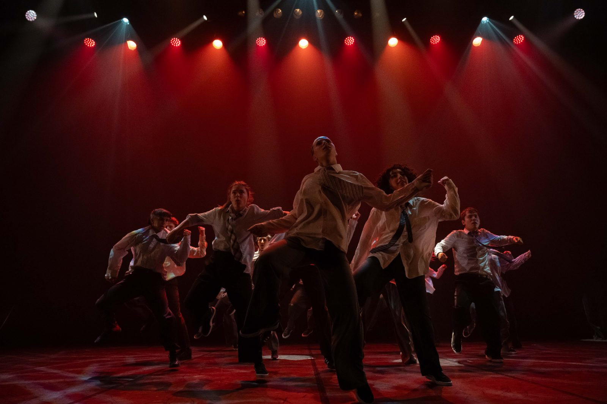
Une école à taille humaine où l'on apprend, on crée et on grandit ensemble. Du premier pas au plateau. We are all one.
Le Cercle des Danseurs Disparus est une école de danse hip-hop située à Toulouse, créée en 2015 sous l'impulsion d'Ifrah Zerarda.
Authenticité, pédagogie et bienveillance : notre enseignement s'adresse à tous, quel que soit le niveau de pratique et l'âge.
Nous proposons des cours dans toutes les disciplines de la danse hip-hop, du break dance enfant jusqu'à l'urban contemporain. Notre équipe de professeurs expérimentés, acteurs majeurs de la scène chorégraphique locale, saura vous accompagner dans votre parcours d'apprentissage. Rejoindre le Cercle, c'est aussi rejoindre une aventure humaine.
We are all one !
La danse est un formidable moyen d'expression, elle permet de transcender l'espace et le temps. Elle est le sublime moyen de toucher les âmes et d'atteindre le dépassement de soi. Mais elle a surtout l'avantage de rapprocher les gens, et c'est dans cette direction que notre enseignement se dirige : une respiration commune, une aventure collective, se sentir vivant et vivifié.
Dans notre local situé au 104 boulevard Pierre et Marie Curie, 31200 Toulouse — à proximité du métro Barrière de Paris.
Consultez le planning et les tarifs de nos cours pour la saison 2026‑2027.
Un aperçu de l'énergie du Cercle — galas, créations et instants de scène.
Hip-hop, house, urban contemporain, floorwork, urban street et éveil danse : le Cercle des Danseurs Disparus propose des cours de danse hip-hop à Toulouse pour tous les âges, de l'éveil dès 4 ans jusqu'aux cours adultes.
Les enfants démarrent par l'éveil danse (4 – 6 ans) avant de rejoindre les groupes hip-hop enfants (6 – 8 ans, 8 – 11 ans). Les adolescents ont leurs propres créneaux (11 – 13 ans, 12 – 16 ans). Les adultes dansent en cours débutant, intermédiaire ou avancé : on part de zéro sans complexe, ou on vient consolider une technique déjà installée. Tous les créneaux sont détaillés dans le planning des cours.
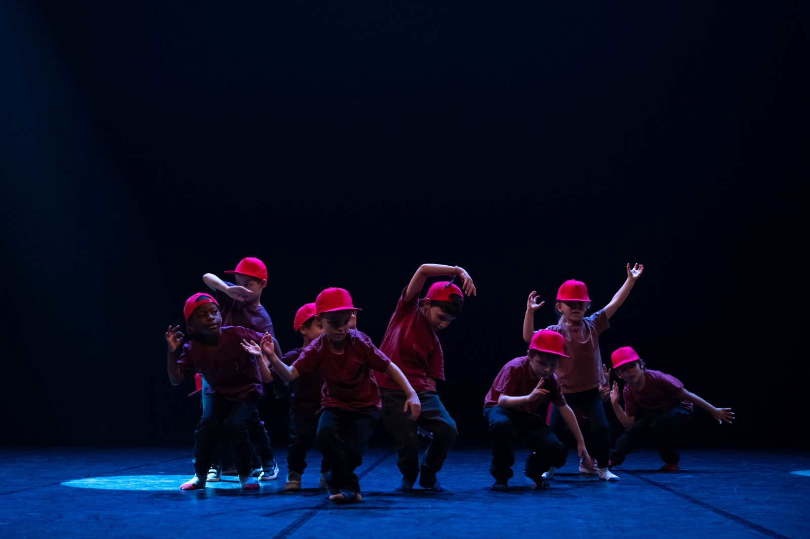
Premier cours offert et sans engagement. Découvre nos formules ou réserve directement ton essai.
Des danseurs et chorégraphes engagés, acteurs majeurs de la scène hip-hop toulousaine.
Une question, un cours d'essai ? On te répond vite par mail — ou retrouve nos coordonnées et le plan d'accès.
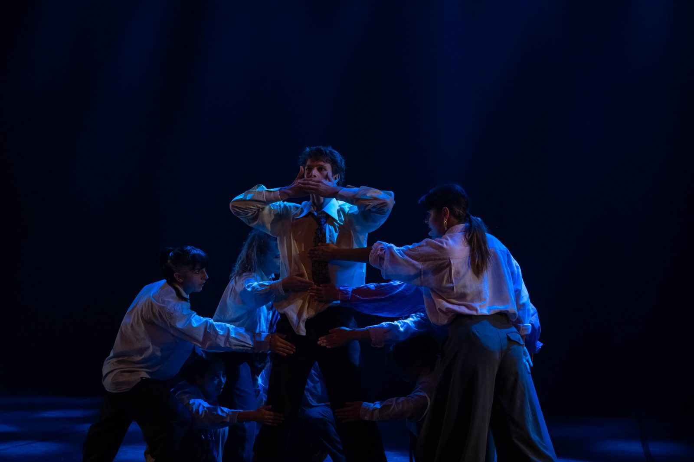
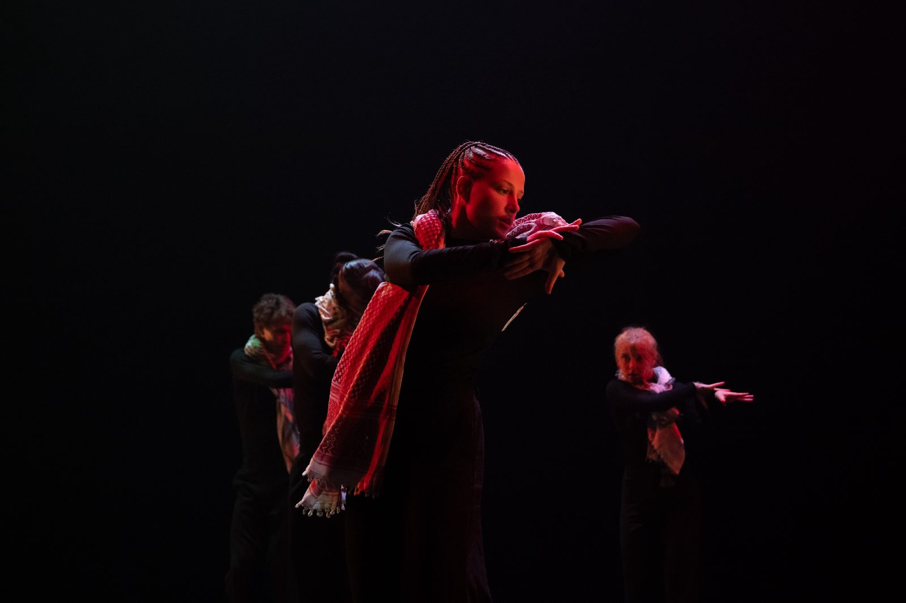

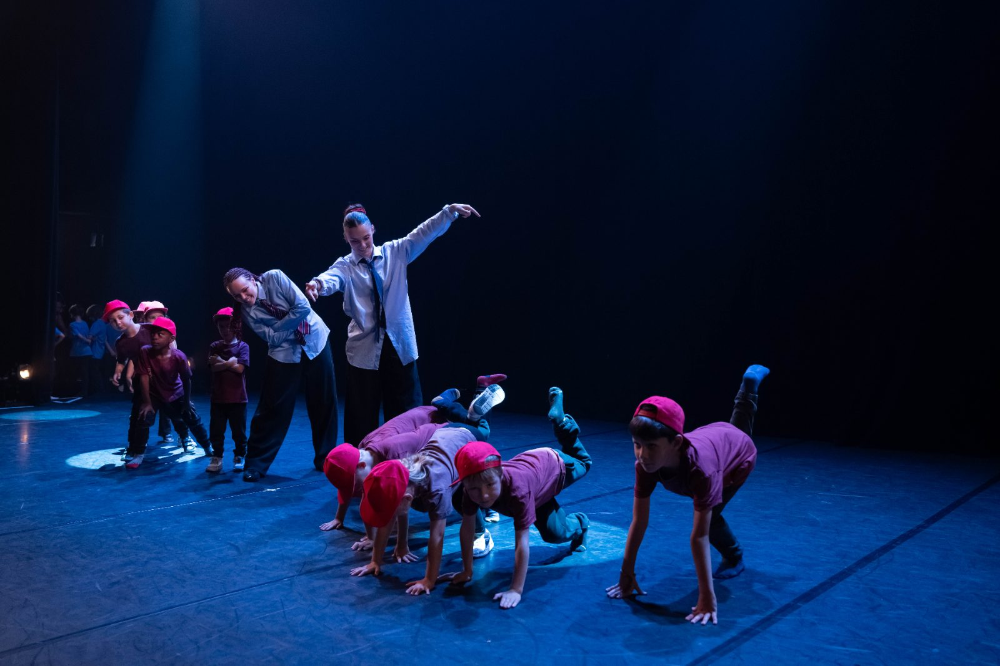
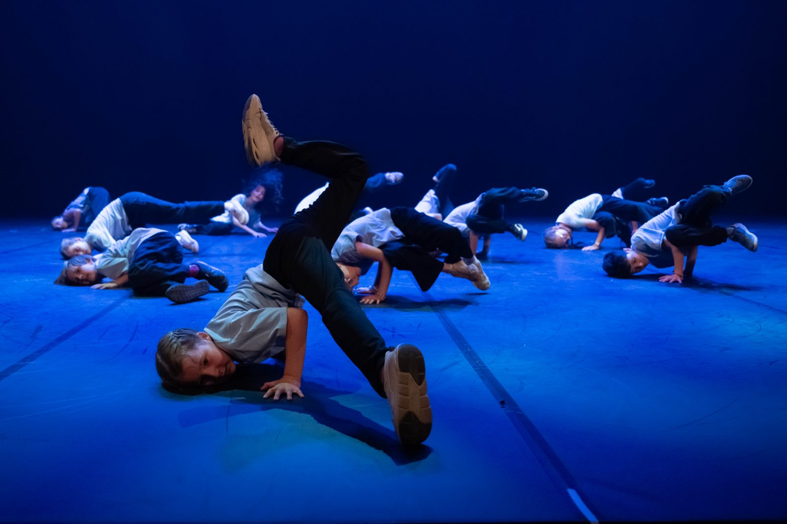
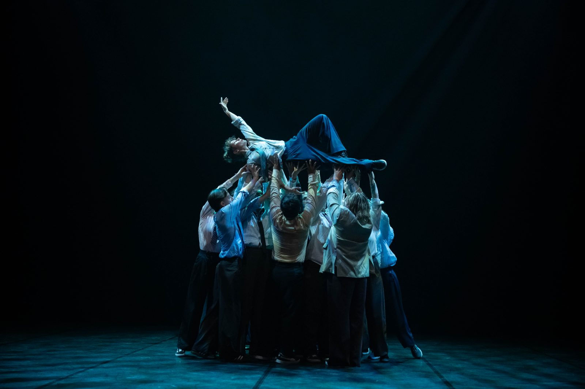
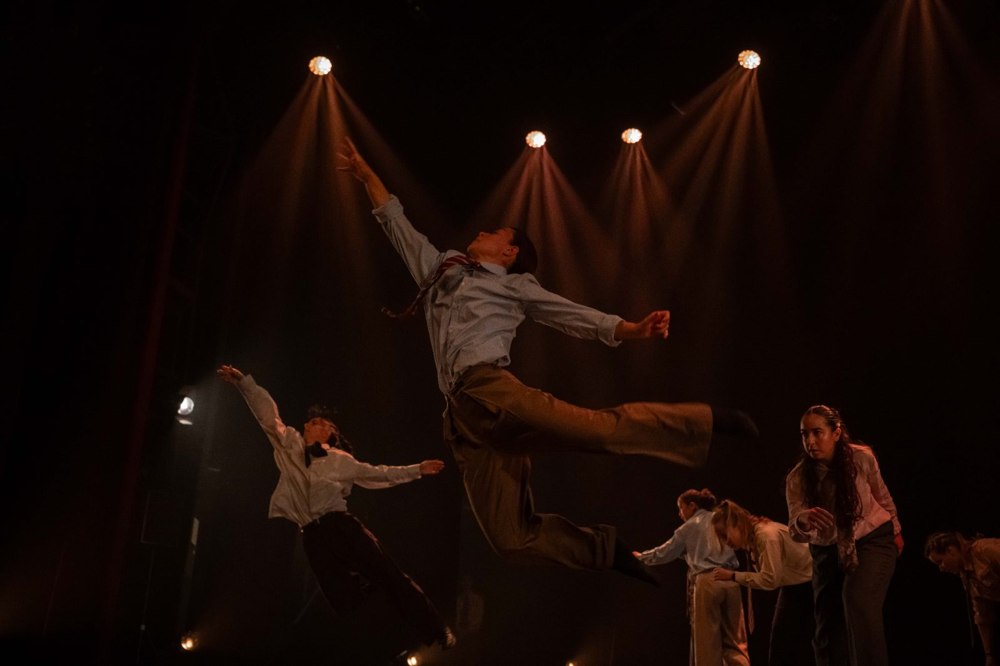
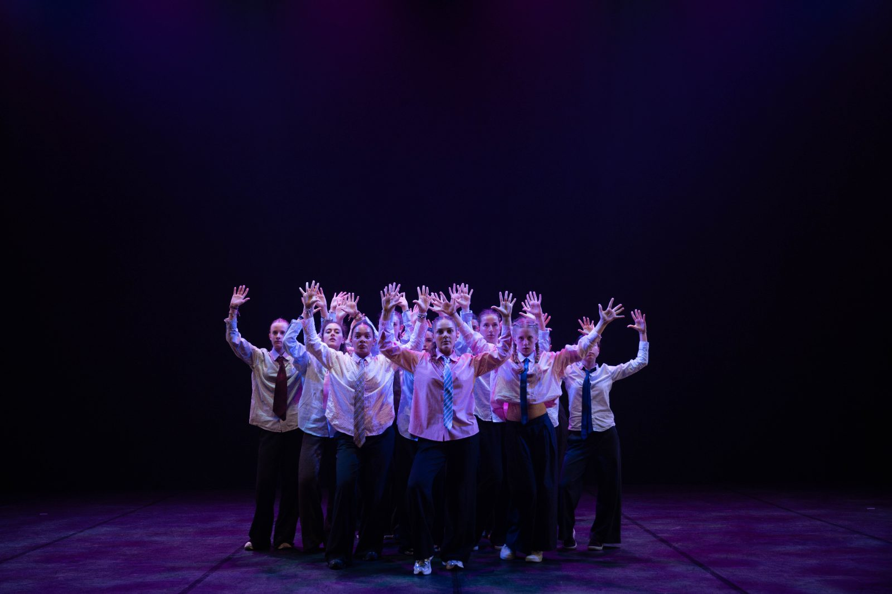
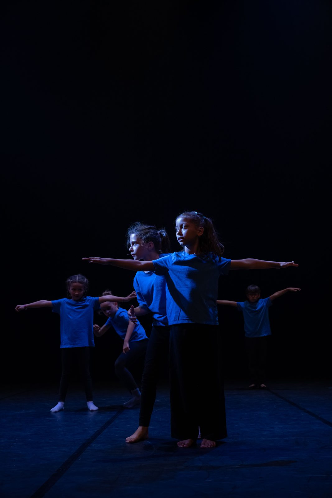
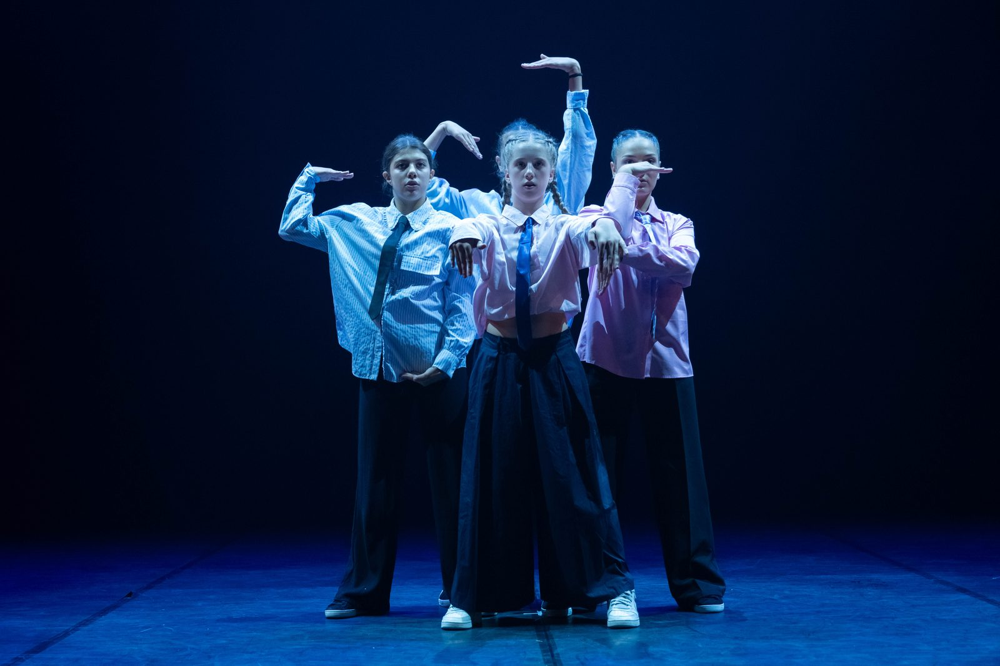
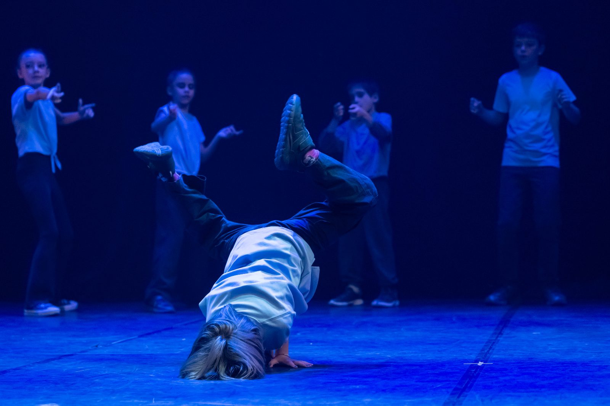
Cours d'essai gratuit !
Inscrivez-vous dès maintenant — soyez des nôtres.
Je m'inscris →